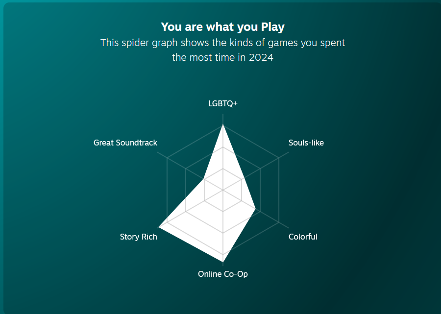

Welcome to JamesIsALiberal.com-the official archive of James, our unapologetically liberal friend whose hot takes are as bold as his refusal to stop using oat milk in everything. James isn't just a guy with opinions—he's a walking manifesto, unafraid to challenge the norms of politics, gaming, and occasionally the laws of intellectual property.
Who is James?
James is the self-proclaimed voice of the people—assuming those people are into third-party politics, pirating retro games, and debating the finer points of Marxist theory in casual conversation. He critiques corporate greed with the fury of a gamer that paid full price for an online game just to pay even more for the battle pass. He rails against American imperialism like he's auditioning for a Noam Chomsky biopic, and has a soft spot for anything that shakes up the capitalist status quo. James has strong opinions of the corrupt upper class, with one of his favorite phrases being "face the wall".
James' Views
On Intellectual Property
James has declared war on companies that overstretch like Nintendo, arguing that pirating their games isn't just justified—it's a moral obligation. "You can't exploit consumers if they exploit you first," he says while downloading his fifth emulator to play EarthBound on a refrigerator. He calls this "digital civil disobedience" and insists it's for the greater good of preserving gaming history. In truth, it is for the greater good. Nintendo is waging a war against game preservation and they stifle creativity in the industry. This is evidenced by the Nintendo vs Palworld spat, which is still ongoing as of 3/10/2026. James' hope is that one day, everyone will recognize that it's not immoral to pirate Nintendo games. Their recent behavior has been so anti-consumer that the only way we can protest is with our wallets.
On the CCP
James often shocks friends with his controversial admiration for certain aspects of the Chinese Communist Party and his advocacy for socalist leaning ideology. He doesn't shy away from praising their focus on collective well-being and long-term planning, which he sees as a refreshing alternative to Western individualism and the chaos of capitalist democracies. While his hot takes spark fierce debates, James insists he's not endorsing authoritarianism—just "exploring systems where billionaires can't build yachts with yachts inside them". He acknowledges that some of their recent actions and policies on capital punishment and are not acceptable for a modern free society, but he's willing to take that trade off. One of their policies that affect him most is their drug policies, as some laws against drugs carry severe capital punishment including the death sentence. This would prompt a major lifestyle shift for James, since he is a fan of recreational marijuana.
On Gaming
Don't bother inviting James to play Helldivers 2—he's too busy replaying Baldur's Gate or writing essays about how Planescape: Torment predicted modern politics. "I just don't enjoy multiplayer games that much," he'll say, as he boots up MTG arena to get his ass kicked in casual matches. He'd rather play Diablo 4 on his own than lock in with the boys. He bought squad months go, and instead of learning how to play with us, he's waiting for the Galactic Contention Star Wars mod to be playable again before even trying a mathch, which will only cause him to be lost and suffer since he won't have the faintest idea about how the game works. He didn't participate in the Helldivers 2 siege of Cyberstan because 1) he'd be going against his socialist brothers 2) He's been "waiting for Arrowhead to cook". I played Divinity with him 3 months ago, that was the last time he agreed to play something with another person that wasn't his own suggestion.
Why This Website?
JamesIsALiberal.com is here to document and celebrate the wild ride that is James' worldview. Whether he's advocating for free healthcare, bitching about games, or a watching a Netflix special dedicated to explaining why voting third-party isn't a waste, James' ideas are equal parts brilliant and absurd. And if you're looking for something truly groundbreaking, check out his proposal to unionize inflatable car lot dancers or use gamer rage to power cities.
So join us as we dive into James' quirky, chaotic, and undeniably entertaining take on politics, gaming, and everything in between. One thing's for sure: the world is a better place with James passionately yelling about it.
